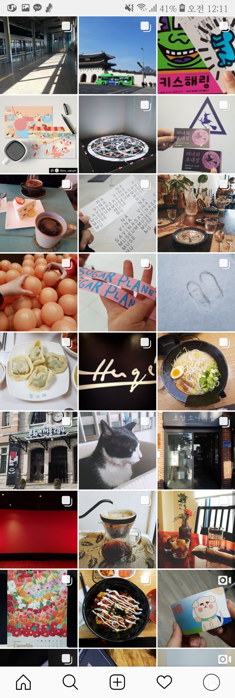

1월달은 동아리에서 나가는 일본 박람회로 눈 뜰세 없이 바쁜 한달이었다.. 분명 방학을 했는데 과제양은 왜 바뀌지 않는거죠..?
방학을 했지만 안성에서 친구들과 열심히 작업을 했다! 인더페이퍼를 몇번을 갔다왔는지...허허허 또 나는 박람회를 두팀 다 나가서 두배로 바빴다...됴륵
그래도 학교에서 지원받은 돈으로 모든것을 해서 마음놓고 비싼 인쇄들을 마음껏했다!!! 특히 백색인쇄 두번은 겁나게 비쌌다.. 트레이싱지에 출력을 했는데 이 제품은 상용화가 안될 비싼 몸이 되었다..
그래도 종이 버전도 있었으니까 된거지뭐! (아무말)

플립북도 만들었다!

파란만장한 1월이 끝났다. 나는 안성을 떠나 (탈안성이다ㅏㅏㅏ야호!) 집으로 갔다.
방학을 즐기러 전시회를 다니고 친구들이랑 놀러다니고x1000 행복한 한달이었다..
물론 구정때 받은 돈을 이 한달안에 다 써버렸지만...큐ㅠㅠㅠㅠㅠ